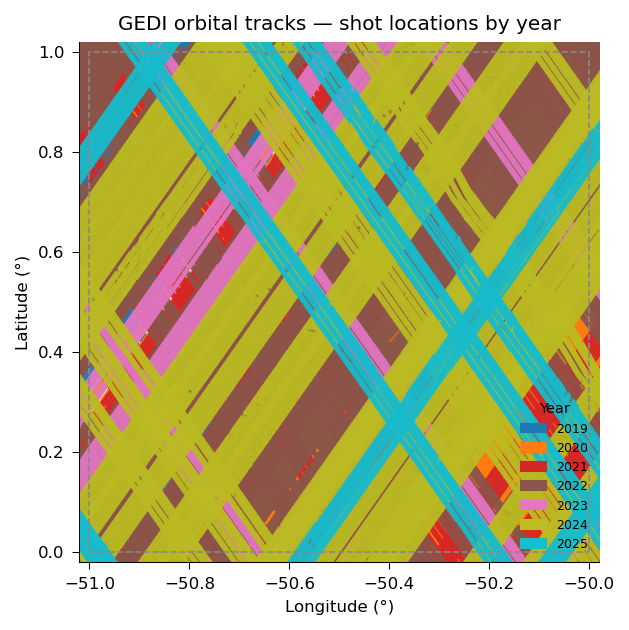
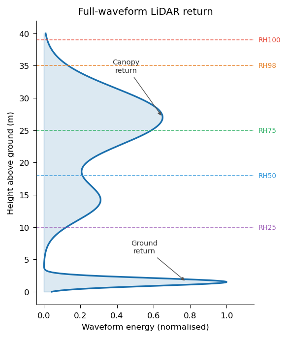

GEDI Data#
What is GEDI?#
The Global Ecosystem Dynamics Investigation (GEDI) is a NASA full-waveform LiDAR instrument mounted on the International Space Station (ISS). Launched in December 2018, GEDI fires laser pulses at the Earth’s surface and records the returning energy waveform — capturing the vertical distribution of vegetation and terrain beneath the canopy.
GEDI covers the Earth between approximately 51.6°N and 51.6°S (the ISS orbital inclination), providing dense coverage of the world’s tropical and temperate forests. See the GEDI homepage for more information.

GEDI shot locations 2019–2025 over a 1°×1° study area in the western Amazon basin, colored by acquisition year. The parallel diagonal lines reveal the ISS orbital structure.#
What Does GEDI Measure?#
Each laser pulse illuminates a circular footprint approximately 25 m in diameter on the ground. The returned waveform is processed into a series of data products:
Product |
Description |
Key Variables |
|---|---|---|
L1B |
Geolocated raw waveforms |
Full waveform data |
L2A |
Ground elevation and canopy height |
ground geolocation, relative height (RH) percentiles |
L2B |
Canopy cover and vertical structure |
Cover, PAI, PAVD vertical profiles |
L4A |
Footprint-level aboveground biomass (AGBD) |
aboveground biomass density |
L4C |
Structural complexity |
WSCI (Waveform Structural Complexity Index) |
The most widely used products for forest science are L2A (canopy height) and L4A (aboveground biomass density), which provide a direct view of forest structure and carbon storage at a near-global scale.

Key Variables by Product#
The tables below list the most often used variables from each GEDI product on applications related to remote sensing and forest monitoring. For every product the HDF5 variable name (as it appears in the raw .h5 file) is shown alongside the column name produced by gedih3 (which appends a product suffix, e.g. _l2a). Quality flags are included in every product — filtering on them is highly recommended for science applications.
L1B — Geolocated Waveforms#
L1B contains the raw digitised waveform from each laser pulse. Most applications do not rely with L1B data directly — it is the input to L2A/L2B — but it is included here for completeness and for users building custom waveform-processing workflows.
Warning
rxwaveform is a variable-length waveform. gedih3 expands it into 1420 individual columns: rxwaveform_0000_l1b through rxwaveform_1419_l1b. For small study areas (a few thousand shots) this is manageable. For databases covering millions of shots it becomes impractical, with dramatic impacts on disk and memory usage. Building L1B waveform data for large areas is strongly discouraged. Use L1B only if your workflow specifically requires the raw waveform shape and/or you’re working from an HPCC environment.
HDF5 variable |
gedih3 column |
Short description |
Definition |
|---|---|---|---|
|
|
Raw return waveform |
Digitised energy profile of the full return signal; encodes the vertical distribution of surfaces from canopy top to ground |
|
|
Corrected noise baseline |
Mean noise level (ADC counts) for each laser shot, derived from the received waveform background after correction; used to subtract noise before waveform analysis |
|
|
Waveform start index |
1-based index into the concatenated |
|
|
Waveform sample count |
Number of sample intervals in each received waveform; defines the length of the waveform slice beginning at |
|
|
Acquisition timestamp |
Seconds elapsed since the 2018-01-01 |
Data dictionary: GEDI L1B Data Dictionary (V2) · LP DAAC product page
L2A — Ground Elevation and Canopy Height Metrics#
L2A is the workhorse product for canopy height studies. It decomposes the received waveform into Gaussian modes and reports the relative height (RH) at each 1-percentile energy interval measured from the ground return upward.
Note
rh is stored as a 101-element array per shot (rh[0]–rh[100]). gedih3 expands selected percentiles into individual named columns: rh_000_l2a, rh_025_l2a, rh_050_l2a, rh_075_l2a, rh_098_l2a, rh_100_l2a, etc.
HDF5 variable |
gedih3 column |
Short description |
Definition |
|---|---|---|---|
|
|
Canopy top height (primary proxy) |
Height (m above ground) below which 98% of waveform energy is returned. The most widely used GEDI metric for top-of-canopy height |
|
|
Absolute maximum canopy height |
Height of the highest return; more sensitive to noise than rh_098 |
|
|
Mid-upper canopy height |
Height at which 75% of energy is returned; useful for sub-dominant canopy layers |
|
|
Median canopy height |
Height at which 50% of waveform energy is returned; less influenced by canopy top outliers |
|
|
Lower canopy / understorey height |
Height below which 25% of energy is returned; sensitive to understorey presence |
|
|
Ground elevation |
WGS-84 ellipsoidal elevation of the centre of the lowest waveform mode (the ground return) |
|
|
Shot latitude (primary geolocation) |
Latitude of the ground return — the most precise geolocation point for each GEDI shot |
|
|
Shot longitude (primary geolocation) |
Longitude of the ground return |
|
|
Shot usability filter |
|
|
|
Canopy penetration detectability |
Maximum canopy cover that the algorithm could penetrate given the ambient noise conditions (0–1). Values below ~0.9 in dense forests indicate the ground return may be unreliable |
Data dictionary: GEDI L2A Data Dictionary (V2) · LP DAAC product page
L2B — Canopy Cover and Vertical Structure Metrics#
L2B uses the full waveform to estimate the vertical distribution of plant material within the canopy column. Key uses include characterising multi-layered canopy structure, estimating light availability at the forest floor, and habitat suitability modelling.
Note
pai_z, pavd_z and cover_z are 30-element arrays per shot, covering 5 m height bins from 0 to 150 m. gedih3 expands each into 30 individual columns (pavd_z_000_l2b … pavd_z_029_l2b, cover_z_000_l2b … cover_z_029_l2b). Building each adds 30 columns to the database — modest compared to waveforms, but worth keeping in mind for large databases.
HDF5 variable |
gedih3 column |
Short description |
Definition |
|---|---|---|---|
|
|
Total canopy cover |
Fraction (0–1) of ground area covered by the vertical projection of any canopy element; equivalent to canopy closure viewed from nadir |
|
|
Foliage height diversity |
Shannon entropy of the vertical foliage distribution, normalised by total PAI. Higher values indicate more structurally complex, multi-layered canopies — a key indicator of habitat quality and biodiversity |
|
|
Plant Area Index |
Total one-sided plant area per unit ground area (m² m⁻²); includes leaves, branches, and stems. A proxy for leaf area index (LAI) in dense forests |
|
|
Vertical foliage density profile |
Plant Area Volume Density at each 5 m height bin (m² m⁻³); describes where foliage is concentrated in the vertical column — distinguishes emergent, canopy, sub-canopy, and understorey layers |
|
|
Cumulative canopy cover profile |
Cumulative fraction of canopy cover from each height bin down to the ground; complements |
|
|
Canopy gap fraction |
Probability of a laser pulse passing through the canopy without interception at the mean beam zenith angle. Directly related to canopy transmittance and light penetration to the forest floor |
|
|
Shot usability filter |
|
Data dictionary: GEDI L2B Data Dictionary (V2) · LP DAAC product page
L4A — Footprint-Level Aboveground Biomass Density#
L4A predicts aboveground biomass density (AGBD) at each GEDI footprint by applying allometric models — calibrated against global forest inventory plots and airborne LiDAR surveys — to the L2A RH metrics. It is the primary GEDI product for forest carbon monitoring.
HDF5 variable |
gedih3 column |
Short description |
Definition |
|---|---|---|---|
|
|
Aboveground biomass density |
Predicted aboveground biomass density (Mg ha⁻¹) of woody vegetation. Derived from RH metrics via stratum-specific allometric models fitted to forest inventory data |
|
|
Biomass prediction uncertainty |
Standard error of the AGBD estimate (Mg ha⁻¹). Essential for uncertainty-aware carbon accounting; large SE values indicate low model confidence |
|
|
Biomass lower prediction bound |
Lower bound of the 95% prediction interval around |
|
|
Biomass upper prediction bound |
Upper bound of the 95% prediction interval around |
|
|
Allometric model identifier |
Character identifier of plant functional type (PFT) and continental region |
|
|
Shot usability filter |
|
Data dictionary & user guide: ORNL DAAC L4A Guide · L4A Data Dictionary PDF · ORNL DAAC product page (V2.1)
L4C — Footprint-Level Structural Complexity#
L4C provides the Waveform Structural Complexity Index (WSCI) — a machine-learning-derived metric trained on matched airborne LiDAR point clouds that quantifies the three-dimensional complexity of forest structure beyond what a single height metric can capture. It is an integrative metric that combines both vertical and horizontal structural elements, useful for biodiversity and habitat quality studies.
HDF5 variable |
gedih3 column |
Short description |
Definition |
|---|---|---|---|
|
|
Waveform Structural Complexity Index |
Dimensionless index (≥ 0) measuring the overall 3-D entropy of the canopy. Derived from an XGBoost regression model trained on airborne LiDAR point clouds across plant functional types. Higher values indicate greater vertical and horizontal structural complexity |
|
|
Vertical structural complexity |
The vertical component of WSCI; captures complexity in the height distribution of canopy elements. Correlates strongly with |
|
|
Horizontal structural complexity |
The horizontal component of WSCI; captures spatial heterogeneity within the 25 m footprint — related to gap fraction heterogeneity and canopy patchiness |
|
|
WSCI lower prediction bound |
Lower bound of the 95% prediction interval around |
|
|
WSCI upper prediction bound |
Upper bound of the 95% prediction interval around |
|
|
Shot usability filter |
|
Data dictionary & user guide: ORNL DAAC L4C Guide · L4C Data Dictionary PDF · ORNL DAAC product page (V2)
Why Is GEDI Data Hard to Work With?#
Despite its scientific importance, raw GEDI data presents significant technical challenges:
1. Orbit-organized, not spatially organized GEDI files are organized by acquisition time (year/day-of-year), not by geography. Answering “give me all shots over the Amazon” requires scanning thousands of files spanning multiple years.
2. Complex HDF5 file format
Each granule is a large HDF5 file (~1–3 GB) with a deeply nested structure: 8 beams per file, hundreds of variables per beam, and a non-intuitive hierarchy. Reading GEDI data correctly requires understanding this structure and using h5py or similar specialized libraries.
3. Quality filtering is non-trivial
Each product has its own quality flags (quality_flag, l4_quality_flag, degrade_flag, sensitivity), and best practices for data filtering involve combining multiple criteria. Getting this wrong leads to noisy or biased results.
4. Scale The full GEDI dataset spans billions of footprints across thousands of HDF5 files. Even simple regional analyses can take hours without proper spatial indexing and distributed processing.
5. Variable proliferation L2A alone provides over 300 variables per beam. Knowing which variables are relevant for a given analysis requires domain expertise.
Files — Hundreds of orbit files (~1–3 GB each) must be parsed even for a small study site
Spatial scope — Each file spans ~1/4 of an ISS orbital track; a large portion of data falls outside your region of interest
Storage — All variables included: hundreds of GB for a regional analysis
Format — Deeply nested HDF5 requiring h5py and domain knowledge of the beam/group structure
Multi-product — Each product (L2A, L4A, …) is a separate file set; must be parsed and joined independently by shot
Tools — Limited to Python h5py, R rhdf5, or specialized GEDI tools
Files — ~4 spatial tiles for a 1°×1° region; queries read only tiles that intersect your area
Spatial scope — Spatially partitioned; each tile contains only shots within its H3 cell
Storage — Curated variable presets (minimal, default): 10–100× smaller on disk
Format — Flat GeoParquet DataFrames: one row per shot, one column per variable
Multi-product — Variables from all products (L2A, L4A, …) are fused into a single cohesive dataset during build
Tools — gedih3 API, Python (pandas, GeoPandas, Dask), R (sf, arrow, sfarrow), QGIS, DuckDB, and any Parquet-compatible tool
gh3_build transforms GEDI’s time-organized HDF5 hierarchy into a spatially partitioned H3 GeoParquet database. A 1°×1° region that spans hundreds of orbit files becomes a handful of queryable tiles.
How gedih3 Addresses These Challenges#
gedih3 was built by remote sensing scientists with direct experience working with GEDI data at scale. Rather than exposing raw complexity, it provides:
Curated variable presets
Instead of navigating hundreds of variables, use minimal (essential metrics only) or default (standard science-ready set) presets for each product. These presets were designed for common use cases and reflect community best practices.
# Build a database with the default science-ready variable set
gh3_build -r "-51,0,-50,1" -l2a default -l4a default --download
→ See the Variable Presets Reference for the full list of variables in each preset, for all products and versions.
Pre-configured quality filtering
A single -y or --quality command line flag applies scientifically-validated quality filters, combining multiple quality criteria correctly across products.
# Extract only high-quality observations
gh3_extract -y -l agbd_l4a rh_098_l2a -o filtered/
Spatial indexing from the ground up gedih3 converts GEDI’s orbit-organized HDF5 files into a spatially-indexed GeoParquet database. Once built, regional queries that would take hours on raw HDF5 complete in seconds.
→ See Building a Database for a complete guide to the build process, variable selection, and subsetting strategies.
Transparent, reproducible pipelines
Every database build is logged with metadata (products, variables, region, resolution levels). gh3_read_schema lets you inspect what any database or output file contains.